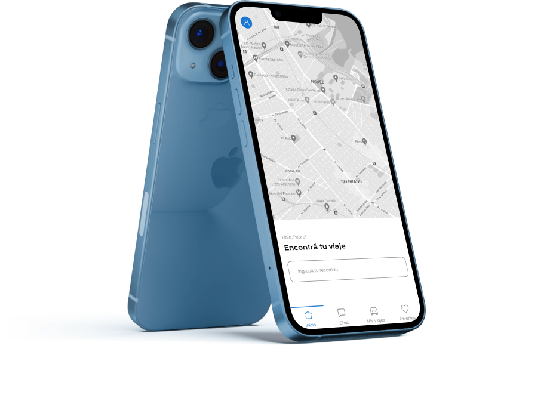

Llegó
FADUFY
Llegó la app que te contacta con otros como vos que quieren llegar a FADU RÁPIDO y SEGURO. Sin hacer cola ni esperar una eternidad.


Llegó la app que te contacta con otros como vos que quieren llegar a FADU RÁPIDO y SEGURO. Sin hacer cola ni esperar una eternidad.

Registrate con tu auto y viaja con compañía! Una manera de compartir los gastos y hacer tu viaje más placentero con otros estudiantes de FADU.

Una manera de llegar a FADU sin preocuparte por nada.
Comparti tu viaje con otros estudiantes y experimenta una nueva manera de viajar, sin colas ni esperas.